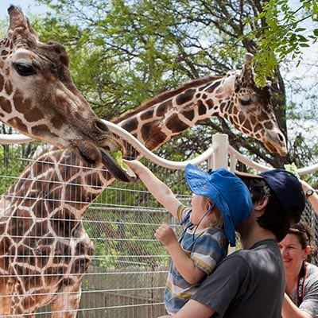

Giraffes
Not even the tallest of basketball players have a chance at winning this height contest. The giraffes tower high above most of their surroundings as they roam their habitat. Some of them are reaching with their long tounges to reach the leaves off of the trees. Yet some of the other giraffes were being fed by hand by other guests at the zoo! What fun! You decide that you can't pass up such a unique experience and end up buying some leaves yourself. When it's your turn to feed, you're able to see just how far their sandpaper-like tounge is able to stretch. You also get a clos up look at the giraffe's miraculous spots. It makes you want to go check out an animal with even more recognizable spots. As you head away from the feeding platform, you spot the enclosure of one of your favorite aquatic animals and add that to the list of things to check out.
As you were feeding the giraffe, one of the zookeepers told you some interesting information about giraffes:
Behavior
Typically, these fascinating animals roam the open grasslands in small groups of about half a dozen.
Bulls sometimes battle one another by butting their long necks and heads. Such contests aren't usually dangerous and end when one animal submits and walks away.
Height and Size
Giraffes use their height to good advantage and browse on leaves and buds in treetops that few other animals can reach (acacias are a favorite). Even the giraffe's tongue is long! The 21-inch tongue helps them pluck tasty morsels from branches. Giraffes eat most of the time and, like cows, regurgitate food and chew it as cud. A giraffe eats hundreds of pounds of leaves each week and must travel miles to find enough food.
The giraffe's height also helps it to keep a sharp lookout for predators across the wide expanse of the African savanna.
The giraffe's stature can be a disadvantage as well—it is difficult and dangerous for a giraffe to drink at a water hole. To do so they must spread their legs and bend down in an awkward position that makes them vulnerable to predators like Africa's big cats. Giraffes only need to drink once every several days; they get most of their water from the luscious plants they eat.
Female giraffes give birth standing up. Their young endure a rather rude welcome into the world by falling more than 5 feet to the ground at birth. These infants can stand in half an hour and run with their mothers an incredible ten hours after birth.
Click here to learn more about giraffes.